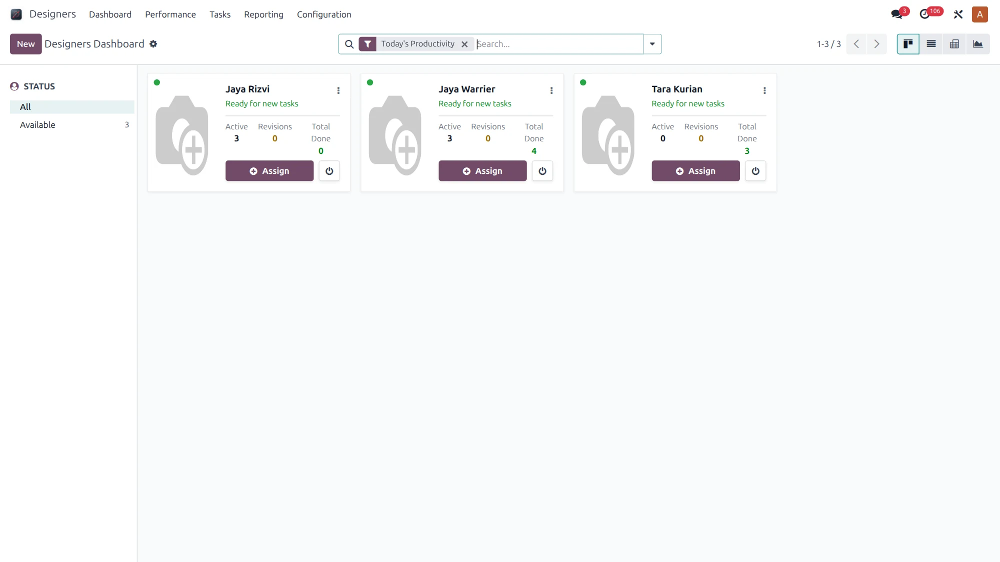
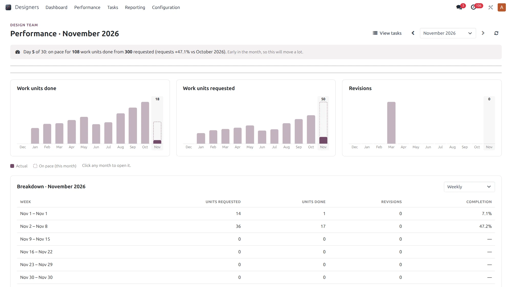
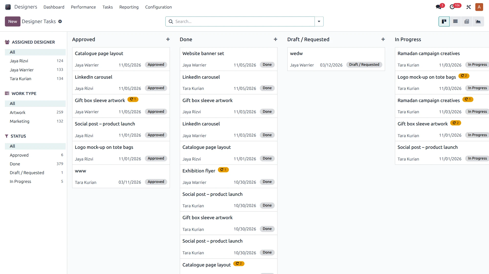

App 06 · Design ops
Sales request artwork and marketing jobs, the lead designer assigns them, and management sees the design team's productivity.

Captured from the real module on an anonymised copy of the database. Names are fictional, and confidential figures are blurred. Click any screen to enlarge it.
Designers board: live availability, active jobs, revisions and done count, with one-click Assign.
Performance: monthly work units done vs requested, revisions, on-pace projection, per-designer right-first-time.

Requests from sales: type, complexity, work units, assigned designer and status.
